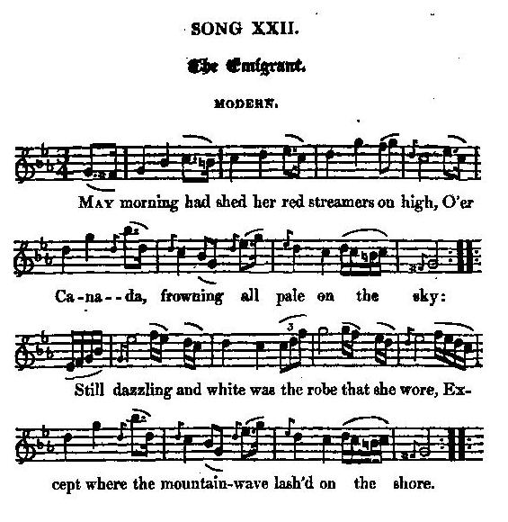

The Emigrant
L'émigrant
By James Hogg
First published in the "Forest Minstrel" (1810)Tune - Mélodie
"The Emigrant"
from Hogg's "Jacobite Relics" 2nd Series Appendix, Jacobite Songs, N°22, 1821
Sequenced by Christian Souchon

|
To the tune:
No information given by Hogg |
A propos de la mélodie:
Hogg ne donne pas de renseignement à ce sujet. |

|
THE EMIGRANT
MODERN (by James Hogg in "The Forest Minstrel") 1. May morning had shed her red streamers on high, O'er Canada frowning all pale on the sky: (twice) Still dazzling and white was the robe that she wore, Except where the mountain wave lash'd on the shore. (twice) 2. Far heaved the young sun, like a lamp on the wave, And loud screamed the gull o'er his foam-beaten cave, When an old lyart swain on a headland stood high, With the staff in his hand, and the tear in his eye. 3. His old tartan plaid, and his bonnet so blue, Declared from what country his lineage he drew ; His visage so wan, and his accents so low, Announced the companion of sorrow and woe. 4. " Ah, welcome thou sun, to thy canopy grand, And to me ! for thou com'st from my dear native land ! Again dost thou leave that sweet isle of the sea, To beam on these winter-bound vallies and me ! 5. " How sweet in my own native valley to roam, Each face was a friend's, and each house was a home ; To drag our live thousands from river or bay, Or chase the dun deer o'er the mountain so grey. 6. " Now forced from my home and my dark halls away, The son of the stranger has made them a prey ; My family and friends to extremity driven, Contending for life both with earth and with heaven. 7. " My country," they said, — " but they told me a lie, Her vallies were barren, inclement her sky ; Even now in the glens, 'mong her mountains so blue, The primrose and daisy are blooming in dew. 8. " How could she expel from those mountains of heath, The clans who maintained them in danger and death ! Who ever were ready the broadsword to draw, In defence of her honour, her freedom, and law. 9. " We stood by our Stuart, till one fatal blow Loosed ruin triumphant, and valour laid low. The lords whom we trusted and lived but to please, Then turned us a-drift to the storms and the seas. 10. " O gratitude ! where didst thou linger the while ? What region afar is illumed with thy smile ? That orb of the sky for a home will I crave, When yon sun rises red on the Emigrant's grave! Source: "The Jacobite Relics of Scotland, being the Songs, Airs and Legends of the Adherents to the House of Stuart" collected by James Hogg, volume 2 published in Edinburgh by William Blackwood, in 1821. |
L'EMIGRANT
MODERNE (de James Hogg, dans "The Forest Minstrel") 1. L'aube de mai qui déroule un flot de rubans incarnats, Illumine le ciel pâle de l'inhospitalier Canada. (bis) Le recouvre encore un manteau de neige de toute sa blancheur immaculée Que n'interrompent que les falaises dont les côtes par ici sont bordées. (bis) 2. Le jeune soleil élève au loin sa lampe sur les flots Et l'âcre cri de la mouette se fait entendre survolant les eaux. Sur un promontoire on voit que se dresse un berger, un vieil homme aux blancs cheveux. Dans sa main il tient une houlette; vois, les larmes scintillent dans ses yeux. 3. Son vieux plaid de tiretaine, tout comme son bonnet bleu, Proclament son origine, révèlent le pays de ses aïeux. La pâleur de son visage et le souffle où s'épuisent en vain ses exhortations Disent assez combien le vieil homme a souffert de deuils et de tribulations. 4. "Sois le bienvenu, bel astre, au firmament brillant fanal! Tu m'es cher, car tu te lèves à l'orient vers mon pays natal. Tu viens de quitter, une fois encore, cette charmante île de l'océan Pour éclairer ces vallées de l'ombre hivernale et moi-même de tes rayons. 5. Que j'aimais dans ma vallée natale à me promener, Où familier m''était chaque visage et chaque maison un foyer. Où nous avions pu, par milliers survivre des ressources d'un loch ou d'un cours d'eau Pourchassant sur la montagne grise le cerf roux et les autres animaux. 6. Maintenant il me faut vivre loin du sol où je suis né La maison de mon enfance est devenue la proie de quelque étranger. Mes amis, les miens ont été de même contraints à de telles extrémités. Ils ont dû remuer ciel et terre pour faire face à tant d'adversité. 7. Mon pays, plus d'un l'affirme, mais il ment assurément, A des vallées peu fertiles et son ciel serait des plus incléments. Pourtant à présent, tous les glens se couvrent, au milieu des monts qui semblent bleuir, De primevères, de pâquerettes que la rosée partout fait s'épanouir. 8. Pourquoi bannir de tes landes et tes monts, O ma patrie, Les clans qui les défendirent et souvent même au péril de leur vie? Eux qui n'hésitèrent jamais à faire jaillir la large épée de son fourreau Pour défendre leurs lois, leurs franchises, leur honneur en sujets fiers et loyaux. 9. Nous avions pris la défense des Stuarts jusqu'au jour fatal Qui vit s'abattre la ruine sur nous et notre valeur mise à mal. Les seigneurs en qui nous avions confiance, mais qui ne vivaient que pour le plaisir Au gré des flots nous abandonnèrent et des tempêtes pour vivre ou mourir. 10. O, Gratitude, où te terres-tu donc depuis si longtemps? En quelle lointaine terre voit-on encor ton sourire éclatant? C'est l'astre du ciel qu'il faut que j'implore pour retrouver le chemin d'un logis, Que vienne le jour où sur la tombe de l'Emigrant, rouge, il aura surgi. (Trad. Christian Souchon (c) 2010) |